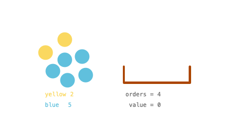

1648. 销售价值减少的颜色球
排序后按「层」贪心：值相同的颜色一起卖，整层拉平用等差求和，订单不够一层时除法分摊；全程 long + 取模。
思路
- 每一步都卖当前剩余最多的颜色（值最大），所以把 inventory 排序，从右往左按层处理。
pool= 值 ≥ 当前层值 v 的颜色数（恒等于n − i）；一层拉平要卖d × pool个，价值和是等差和(v+next+1)×d/2 × pool。- 拉平后这 pool 个颜色降到
next，与下一层合并：i--且pool++，循环开头的 while 再把同值颜色并进来。 - 订单不足一层：
q = orders / pool整层摊、rem个再各卖一个v − q。中间量最大约 1e18，先取模再乘（INV2代替除 2）防溢出。
图解
最优解
1import java.util.*;2 3class Solution {4 private static final long MOD = 1_000_000_007L;5 private static final long INV2 = 500_000_004L; // 2 模 MOD 的逆元，等差和除 2 用6 7 public int maxProfit(int[] inventory, int orders) {8 Arrays.sort(inventory); // 升序；从值最大的那层开始卖9 int n = inventory.length, i = n - 1;10 long pool = 1; // 当前层的颜色数：值 ≥ v 的颜色都算这一层11 long ans = 0;12 while (orders > 0 && i >= 0) {13 while (i > 0 && inventory[i - 1] == inventory[i]) { i--; pool++; }14 long v = inventory[i]; // 当前层卖到的值15 long next = i > 0 ? inventory[i - 1] : 0; // 下一层的值；没有就卖到 1 为止16 long d = v - next; // 这一层到下一层的落差17 long take = d * pool; // 把整层拉平要卖的球数18 if (take <= orders) {19 // 整层卖掉：每个颜色贡献 v, v-1, …, next+1，等差求和20 long sum = (v + next + 1) % MOD * (d % MOD) % MOD * INV2 % MOD;21 ans = (ans + pool % MOD * sum) % MOD;22 orders -= take;23 i--;24 pool++; // 拉平后这层颜色降到 next，与下层合并25 } else {26 // 卖不完整层：每种颜色卖 q 个，再挑 rem 种各卖 1 个27 long q = orders / pool, rem = orders % pool;28 long sum = (2 * v - q + 1) % MOD * (q % MOD) % MOD * INV2 % MOD;29 ans = (ans + pool % MOD * sum + rem % MOD * ((v - q) % MOD)) % MOD;30 orders = 0;31 }32 }33 return (int) ans;34 }35}题目
你有一些球的库存 inventory ，里面包含着不同颜色的球。一个顾客想要 任意颜色 总数为 orders 的球。
这位顾客有一种特殊的方式衡量球的价值：每个球的价值是目前剩下的 同色球 的数目。比方说还剩下 6 个黄球，那么顾客买第一个黄球的时候该黄球的价值为 6 。这笔交易以后，只剩下 5 个黄球了，所以下一个黄球的价值为 5 （也就是球的价值随着顾客购买同色球是递减的）
给你整数数组 inventory ，其中 inventory[i] 表示第 i 种颜色球一开始的数目。同时给你整数 orders ，表示顾客总共想买的球数目。你可以按照 任意顺序 卖球。
请你返回卖了 orders 个球以后 最大 总价值之和。由于答案可能会很大，请你返回答案对 109 + 7 取余数 的结果。
示例 1：

输入：inventory = [2,5], orders = 4 输出：14 解释：卖 1 个第一种颜色的球（价值为 2 )，卖 3 个第二种颜色的球（价值为 5 + 4 + 3）。 最大总和为 2 + 5 + 4 + 3 = 14 。
示例 2：
输入：inventory = [3,5], orders = 6 输出：19 解释：卖 2 个第一种颜色的球（价值为 3 + 2），卖 4 个第二种颜色的球（价值为 5 + 4 + 3 + 2）。 最大总和为 3 + 2 + 5 + 4 + 3 + 2 = 19 。
示例 3：
输入：inventory = [2,8,4,10,6], orders = 20 输出：110
示例 4：
输入：inventory = [1000000000], orders = 1000000000 输出：21 解释：卖 1000000000 次第一种颜色的球，总价值为 500000000500000000 。 500000000500000000 对 109 + 7 取余为 21 。
提示：
1 <= inventory.length <= 1051 <= inventory[i] <= 1091 <= orders <= min(sum(inventory[i]), 109)
题面取自力扣当前版本。
数据快照 2026-11-04。题面版权归力扣所有，本站点仅供本人学习使用，请勿对外发布。